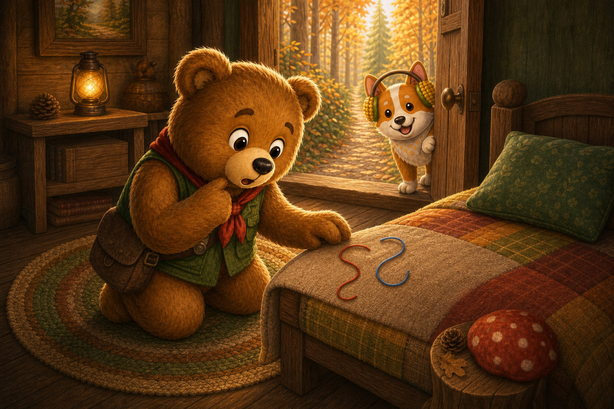
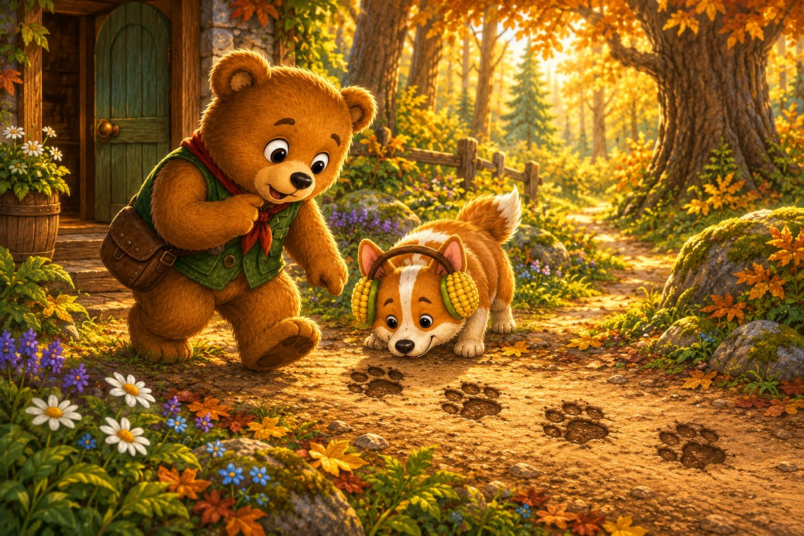
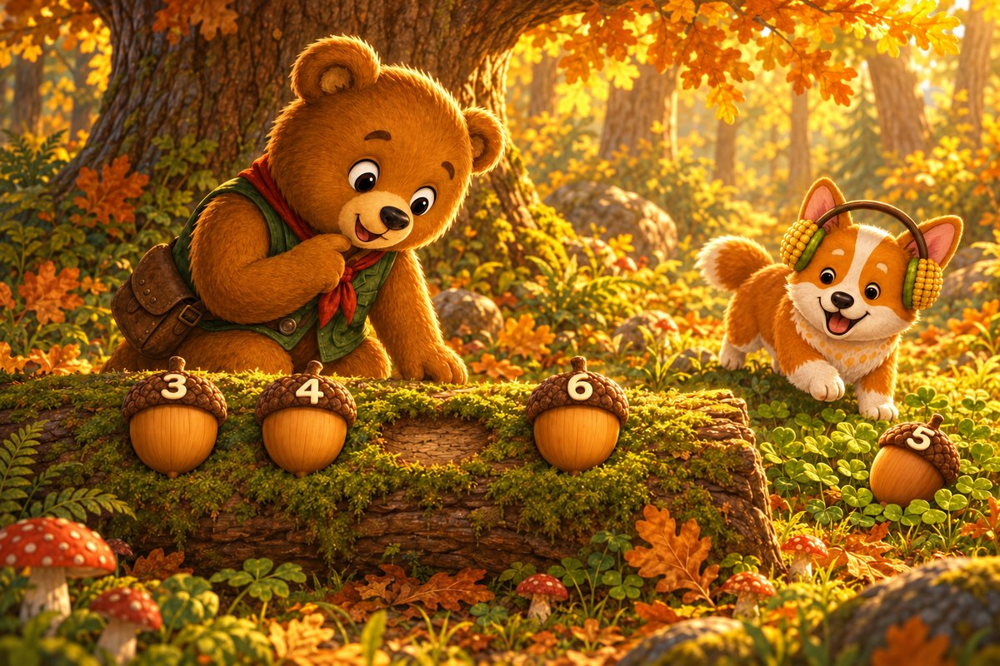
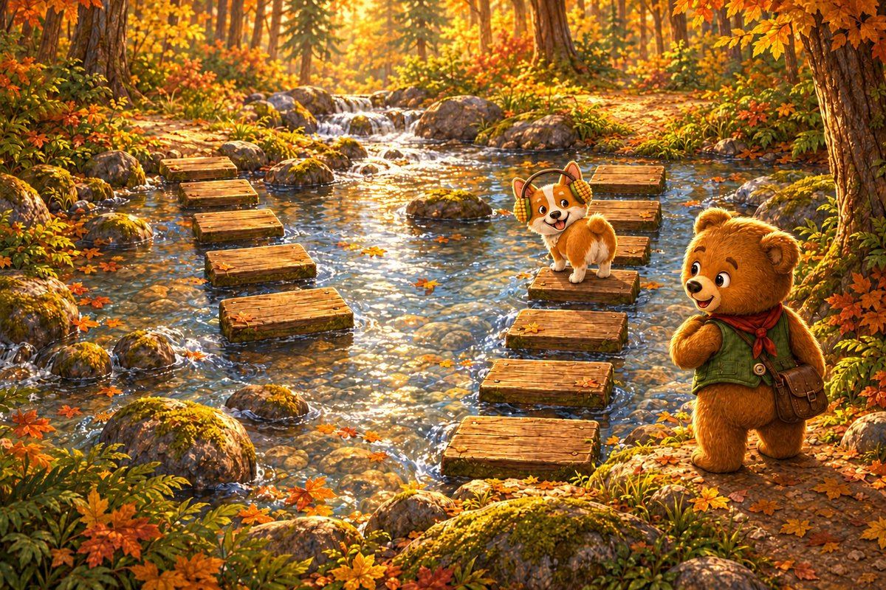
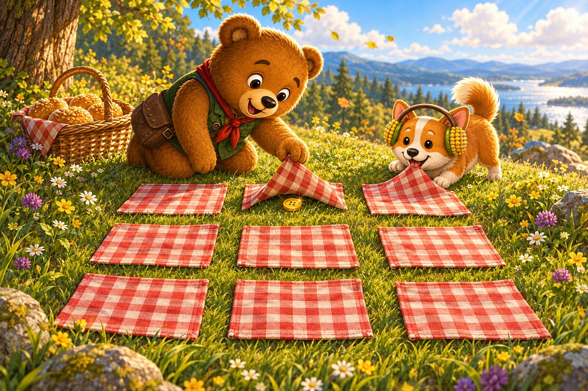
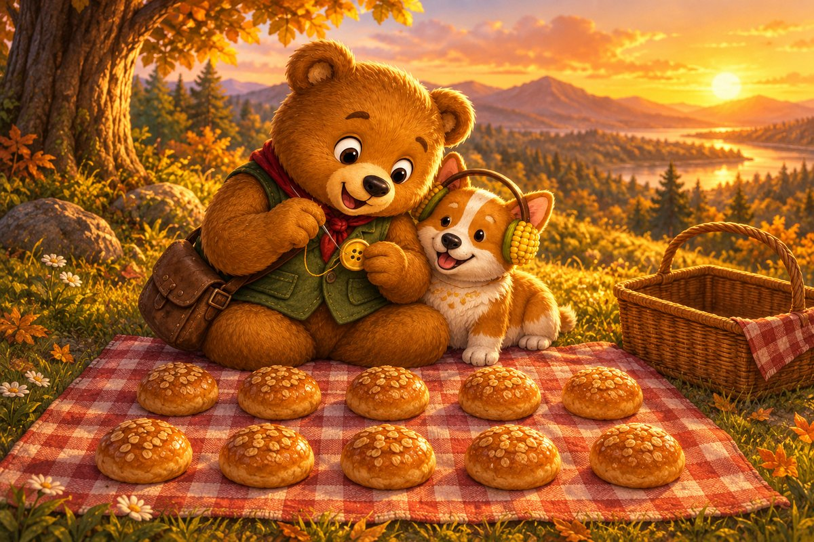

7 printed pages · 1.9 MB · A4 or US Letter. Download PDF · Open PDF to printOpens in a new tab. Use the PDF viewer's Print control. To use less ink, read online and choose only the questions on page 7 in Print.

Page 1 of 6 · An Empty Thread
Ted-E-Bear taps his vest before every adventure. Tap-tap means, ‘I can try.’ But this morning his paw finds an empty spot. His lucky button is gone. Corgi-on-the-Cob sniffs the curling threads, then sneezes a tiny pop of corn. The first clues are waiting beside Ted’s bed.
Try it: How many loose threads curl from Ted’s vest?
1
2
3
Show the answer
2. Two threads — and one points towards the door.

Page 2 of 6 · The Muddy Clues
Outside, fresh paw marks cross the path. Ted’s tummy feels fluttery. What if the trail is too long? Corgi presses his nose to the first print and gives a hopeful bark-pop. Ted takes one careful step, then another. Trying feels a little like courage.
Try it: How many prints cross the path?
3
4
5
Show the answer
4. Four prints lead straight to the Great Oak.

Page 3 of 6 · Acorns in Order
Beneath the oak, numbered acorns sit in a neat row. One has rolled into the clover, leaving a gap. Corgi wants to chase it, but Ted studies the caps. ‘Wait,’ he says. ‘The row is trying to tell us something.’
Sequence: 3, 4, ?, 6
Try it: Which number belongs in the gap?
3
5
7
Show the answer
5. Five! The runaway acorn points towards the picnic hill.

Page 4 of 6 · The Wobbly Bridge
A little bridge stretches over the creek. One side has a short line of stepping planks; the other has a longer line. Ted does not like wobbling. Corgi trots onto the side with more places to step, then turns and waits. Ted touches the empty spot on his vest. ‘I can still try.’
Try it: Which group has more?
5 planks
7 planks
They match
Show the answer
7 planks. Seven steady planks carry both friends safely across.

Page 5 of 6 · A Golden Glint
On the hill, picnic napkins flap in the breeze. Something gold flashes beneath them, then disappears. Corgi’s tail starts popping so quickly that Ted laughs. Together they lift each napkin while the warm smell of honey-oat buns drifts from the basket.
Try it: How many napkins hid the golden glint?
8
9
10
Show the answer
9. Nine napkins lifted — and there is Ted’s button!

Page 6 of 6 · Lucky Enough
The button was holding down the picnic cloth all along. Ted sews it back onto his vest, then pauses. He crossed the path, solved the acorns, and braved the bridge without it. Corgi leans close. Tap-tap. ‘Lucky button,’ says Ted, ‘meet my brave paws.’
Try it: Two equal groups of five make how many treats?
8
10
12
Show the answer
10. Two fives make ten — enough for a brave picnic together.
The end · Great counting
Was the button Ted’s only kind of luck?
Talk about the answer
Ted discovered that his own brave paws, and a patient friend, helped him finish the trail.
My button may be lucky, but I crossed the bridge without it. Those were my brave paws — and you counted every clue beside me! SnackPack 123 Counting has more number stories, counting games and ten-frames.